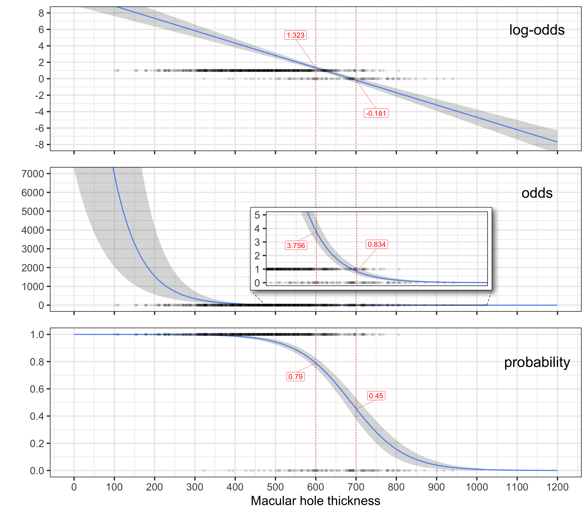

Code
# Recreate data from Ophthalmic statistics note 11: logistic regression.
# Original source: A comparison of several methods of macular hole measurement using optical coherence tomography, and their value in predicting anatomical and visual outcomes.
library(tidyverse)
library(ggpubr)
library(ggmagnify)
library(emmeans)
# Simulate data ----
n <- 1000 # don't change this unless necessary (plots might be fragile)
set.seed(1234)
x <- rnorm(n, 486, 142) # generate macular hole inner opening data with mean 486 and sd = 152
z <- 10.89 - 0.016 * x # generate variable that is linear combination of intercept = 10.89 and coefficient for macular hole -0.016 (logit scale)
pr <- 1/(1 + exp(-z)) # generate probabilities from this
y <- rbinom(n, 1, pr) # generate outcome variable as a function of those probabilities
# Create dataframe from these:
df <- data.frame(y = y, x = x, z = z, pr = pr)
df <- df |>
filter(x > 100) # only include those with thickness > 100
# Logistic regression model ----
# Rescale x to 1 unit = 100 microns instead of 1 micron
summary(mod_logistic <- glm(y ~ I(x/100), data = df, family = "binomial"))
Call:
glm(formula = y ~ I(x/100), family = "binomial", data = df)
Coefficients:
Estimate Std. Error z value Pr(>|z|)
(Intercept) 10.3501 0.7456 13.88 <2e-16 ***
I(x/100) -1.5045 0.1212 -12.42 <2e-16 ***
---
Signif. codes: 0 '***' 0.001 '**' 0.01 '*' 0.05 '.' 0.1 ' ' 1
(Dispersion parameter for binomial family taken to be 1)
Null deviance: 773.74 on 989 degrees of freedom
Residual deviance: 494.67 on 988 degrees of freedom
AIC: 498.67
Number of Fisher Scoring iterations: 6Code
# Emmeans of logodds at 600 and 700 microns
emmeans_df <- data.frame(emmeans(mod_logistic, ~ x, at = list(x = c(600, 700))))
# Create df of emmeans and corresponding odds and probs, for plotting
emmeans_df <- emmeans_df |>
select(x, emmean) |>
rename(logodds = emmean) |>
mutate(odds = round(exp(logodds), 3),
probs = round(plogis(logodds), 2),
logodds = round(logodds, 3))
# Predictions ----
# Create new df to predict on new values of x
new_dat <- data.frame(x = seq(from = 0, to = 1200, length.out = 100))
# Predict new fitted values and SE's on logodds scale
pred_logodds <- predict(mod_logistic, newdata = new_dat, type = "link", se = TRUE)
new_dat <- cbind(new_dat, pred_logodds)
# Create new df of predictions
predictions <- new_dat |>
rename(pred_logodds_est = fit) |>
mutate(pred_logodds_LL = pred_logodds_est - (1.96 * se.fit),
pred_logodds_UL = pred_logodds_est + (1.96 * se.fit)) |>
select(-c(se.fit, residual.scale))
# Predict new fitted values and SE's on odds scale
predictions <- predictions |>
mutate(pred_odds_est = exp(pred_logodds_est),
pred_odds_LL = exp(pred_logodds_LL),
pred_odds_UL = exp(pred_logodds_UL))
# Predict new fitted values and SE's on probability scale
pred_probs <- predict(mod_logistic, newdata = new_dat, type = "response", se = TRUE)
new_dat <- cbind(new_dat[1], pred_probs)
new_dat <- new_dat |>
mutate(pred_probs_LL = fit - (1.96 * se.fit),
pred_probs_UL = fit + (1.96 * se.fit))
# Add predicted probs and CIs to predictions df
predictions <- cbind(predictions,
pred_probs_est = new_dat$fit,
pred_probs_LL = new_dat$pred_probs_LL,
pred_probs_UL = new_dat$pred_probs_UL)
# Reformat plots slightly for ggarrange ----
p3a <- ggplot(predictions, aes(x = x, y = pred_logodds_est)) +
geom_ribbon(aes(ymin = pred_logodds_LL, ymax = pred_logodds_UL), alpha = 0.2) +
geom_line(color = "cornflowerblue", linewidth = 1) +
geom_point(data = df, aes(x = x, y = y), size = 2, alpha = 0.1) +
annotate("text", x = 1150, y = 6, label = "log-odds", size = 10) +
scale_x_continuous(limits = c(0, 1200), breaks = seq(0, 1200, by = 100)) +
scale_y_continuous(limits = c(-100, 100), breaks = seq(-100, 100, by = 2)) +
coord_cartesian(xlim = c(0, 1200), ylim = c(-8, 8)) +
geom_vline(xintercept = 600, color = "red", linetype = "dotted", linewidth = 0.6) +
geom_vline(xintercept = 700, color = "red", linetype = "dotted", linewidth = 0.6) +
ggrepel::geom_label_repel(data = emmeans_df, aes(x, logodds),
label = emmeans_df$logodds,
nudge_x = c(-50, 50), nudge_y = c(4, -4),
color = "red", segment.size = 0.2, size = 5) +
theme_bw(base_size = 25) +
ylab("") +
theme(axis.title.x = element_blank(), axis.text.x = element_blank())
p4a <- ggplot(predictions, aes(x = x, y = pred_odds_est)) +
geom_ribbon(aes(ymin = pred_odds_LL, ymax = pred_odds_UL), alpha = 0.2) +
geom_line(color = "cornflowerblue", linewidth = 1) +
geom_point(data = df, aes(x = x, y = y), size = 2, alpha = 0.1) +
annotate("text", x = 1150, y = 6000, label = "odds", size = 10) +
scale_x_continuous(limits = c(0, 1200), breaks = seq(0, 1200, by = 100)) +
scale_y_continuous(limits = c(-20, 1000000), breaks = c(seq(0, 1000000, by = 1000))) +
coord_cartesian(xlim = c(0, 1200), ylim = c(0, 7000)) +
geom_vline(xintercept = 600, color = "red", linetype = "dotted", linewidth = 0.6) +
geom_vline(xintercept = 700, color = "red", linetype = "dotted", linewidth = 0.6) +
ylab("") +
theme_bw(base_size = 25) +
theme(axis.title.x = element_blank(), axis.text.x = element_blank())
p4a_inset <- p4a +
scale_y_continuous(limits = c(-20, 1000000), breaks = c(1,2,3,4,5, seq(0, 1000000, by = 1000))) +
geom_vline(xintercept = 600, color = "red", linetype = "dotted", linewidth = 0.6) +
geom_vline(xintercept = 700, color = "red", linetype = "dotted", linewidth = 0.6) +
ggrepel::geom_label_repel(data = emmeans_df, aes(x, odds),
label = emmeans_df$odds,
nudge_x = c(-50, 50), nudge_y = c(-1, 2),
color = "red", segment.size = 0.2, size = 5)
p4a <- p4a + geom_magnify(from = c(xmin = 500, xmax = 1000, ymin = 0, ymax = 5),
to = c(xmin = 465, xmax = 1010, ymin = 1000, ymax = 5000),
shadow = T, axes = "y", plot = p4a_inset)
p5a <- ggplot(predictions, aes(x = x, y = pred_probs_est)) +
geom_ribbon(aes(ymin = pred_probs_LL, ymax = pred_probs_UL), alpha = 0.2) +
geom_line(color = "cornflowerblue", linewidth = 1) +
geom_point(data = df, aes(x = x, y = y), size = 2, alpha = 0.1) +
annotate("text", x = 1150, y = 0.8, label = "probability", size = 10) +
scale_x_continuous(limits = c(0, 1200), breaks = seq(0, 1200, by = 100)) +
scale_y_continuous(limits = c(0, 1), breaks = seq(0, 1, by = 0.2)) +
geom_vline(xintercept = 600, color = "red", linetype = "dotted", linewidth = 0.6) +
geom_vline(xintercept = 700, color = "red", linetype = "dotted", linewidth = 0.6) +
ggrepel::geom_label_repel(data = emmeans_df, aes(x, probs),
label = emmeans_df$probs,
nudge_x = c(-50, 50), nudge_y = c(-0.1, 0.1),
color = "red", segment.size = 0.2, size = 5) +
ylab("") + xlab("Macular hole thickness") +
theme_bw(base_size = 25)
ggarrange(p3a, p4a, p5a, align = "v", ncol = 1, heights = c(1,1,1.2))